Modbus Smart Energy Meter
Project Overview
This project provides a robust and efficient Modbus Smart Energy Meter designed for Industrial IoT (IIoT) gateways. Its primary objective is to enable seamless communication between Modbus-based energy meters (typically using the Modbus RTU protocol over serial interfaces such as RS485) and cloud platforms or local monitoring systems via MQTT.
The plugin serves as a middleware layer, bridging industrial field devices with modern IoT communication protocols. It enables real-time energy data collection, monitoring, and remote analytics.
{kind=link}
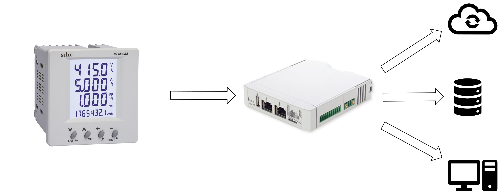
Key Features
Modbus RTU Support: Communicates with Modbus RTU meters over serial interfaces.
MQTT Integration: Publishes data to MQTT brokers such as Mosquitto or AWS IoT.
Flexible Configuration: Supports configurable register maps, baud rates, and topics.
Data Transformation: Converts Modbus registers into human-readable values.
Cloud and Edge Compatibility: Works with both local and cloud monitoring systems.
Logging and Debugging: Includes built-in logging for diagnostics and development.
How It Works
Serial Communication Initialization Establishes a connection to Modbus devices via serial ports (e.g., RS485).
Data Acquisition Sends Modbus queries to read energy-related registers, including:
Voltage (V)
Current (A)
Power (kW/kWh)
Power Factor
Frequency (Hz)
Active Power (W)
Apparent Power (VA)
Data Processing Parses and scales raw register values based on the meter’s specification.
MQTT Publishing Sends processed data to an MQTT broker under structured topics:
/energy/<device_id>/voltage /energy/<device_id>/power
Monitoring & Analytics MQTT messages are consumed by cloud or local systems for display, storage, or analysis.
Project Architecture
This section provides an overview of the architecture of the Modbus Smart Energy Meter, illustrating how it integrates with Modbus devices and MQTT brokers. The architecture consists of several key components that work together to enable efficient data collection and transmission:
{kind=link}
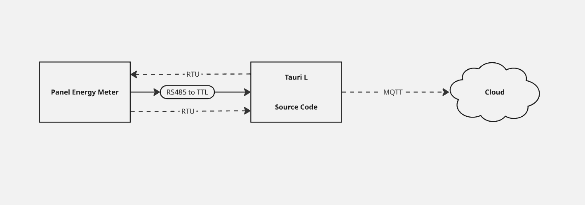
Technical Stack
Component |
Technology Used |
|---|---|
Programming Lang |
Python / Rust / C++ |
Communication |
Modbus RTU over RS485 serial |
Messaging |
MQTT |
Config Format |
JSON / YAML / TOML |
Logging |
Syslog / File-based |
Deployment |
systemd service / Docker container |
OS Compatibility |
Debian / Ubuntu / OpenWRT |
Security Considerations
TLS/SSL encryption for MQTT
MQTT authentication (username/password or certificates)
Serial access controlled by system permissions
Use Cases
Real-time monitoring in industrial settings
Integration with cloud energy platforms
Energy logging for audit or compliance
Anomaly detection and optimization
Testing & Validation
Simulators: ModRSsim2, ModbusPal
Hardware: Tested with Schneider, Secure, Selec, etc.
Tools: MQTT.fx, Mosquitto CLI for MQTT debugging
Future Enhancements
Modbus TCP support
Device auto-discovery
OTA update integration
OPC-UA or REST API bridge
Web-based configuration UI
Device connection
This section describes how the PHYTedge Modbus Plugin connects to energy meters and other devices using Modbus RTU over RS485, and how it integrates with MQTT for data transmission. The plugin establishes a serial connection to the Modbus devices, reads energy-related registers, processes the data, and publishes it to an MQTT broker for further consumption.
Note
Currently, we are not able to connect the Panel energy meter directly to the Tauri-L using RS485. Therefore, we have used an RS485 to TTL converter, and connected the TTL output to the USB port of the Tauri-L.
{kind=link}
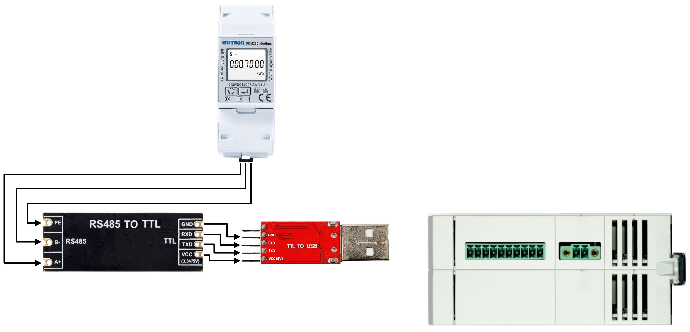
Source Code Brief
The following table summarizes the key components of the source code:
File/Directory |
Description |
|---|---|
Modbus_plugin/ |
Contains app.py which manages register mapping and publishes data (measurements, alarms, events) to cloud. |
Docker-compose.yml |
Defines how to launch services using Docker Compose. |
Dockerfile |
Instructions to build the Docker image. |
main.py |
Entry point of the application that starts the plugin. |
modbus_plugin.service |
(Optional) systemd file to run app as background service. |
requirements.txt |
Lists Python dependencies for the application. |
docker_install.sh |
Docker installation script on the device. |
tedge_install.sh |
Thin-Edge installation script on the device. |
Getting started with Thin-edge
This section describes how to run the PHYTEC Edge Modbus Python application and connect it to ThingsBoard using Thin-edge on the i.MX8MM Tauri-L platform.
Prerequisites
Ensure the following before running the application:
Thin-edge is properly installed and configured.
Device certificates are provisioned.
Network connectivity is available.
Python3 runtime and required dependencies are installed.
Application Location
The Python application source is installed under:
/usr/share/phytedge-modbus/
To verify the installation, execute:
root@phygate-tauri-l-imx8mm-2:~# cd /usr/share/
root@phygate-tauri-l-imx8mm-2:share# ls
You should see the directory:
phytedge-modbus/
Navigate into the application directory:
root@phygate-tauri-l-imx8mm-2:share# cd phytedge-modbus/
root@phygate-tauri-l-imx8mm-2:phytedge-modbus# ls
The directory contains the following files:
modbus_plugin/
Dockerfile
docker-compose.yml
entrypoint.sh
main.py
requirements.txt
tests/
README.md
docker_install.sh
log.txt
modbus_plugin.service
tedge_install.sh
Running the Application
To start the Python application manually, execute:
root@phygate-tauri-l-imx8mm-2:phytedge-modbus# python3 main.py
The application will initialize the Modbus plugin and establish communication with ThingsBoard through Thin-edge.
Logs:
root@phygate-tauri-l-imx8mm-2:phytedge-modbus# ls
modbus_plugin/ Dockerfile docker-compose.yml entrypoint.sh main.py requirements.txt
tests/ README.md docker_install.sh log.txt modbus_plugin.service tedge_install.sh
root@phygate-tauri-l-imx8mm-2:phytedge-modbus# python3 main.py
Connected to Modbus device SDM230. Press Ctrl+C to stop.
Event Sent: Device is online
Sent Voltage: 228.348
Sent Current: 0.000
Sent Frequency: 50.000
Sent Active Power: 0.000
Sent Apparent Power: 0.000
Sent Power Factor: 1.000
Sent Energy: 0.002
Sent Voltage: 228.124
Sent Current: 0.000
Energy Meter Device Selection
Right now we are using the Selec MFM3833A energy meter and SDM230-MODBUS-MID V2 energy meter, which is a Modbus RTU device. The device is connected to the Tauri-L gateway via RS485.
The Selec MFM3833A energy meter and SDM230-MODBUS-MID V2 energy meter follows different Modbus registers for reading the energy meter data.
The following table summarizes the Modbus registers for both devices:
Register |
Selec MFM3833A |
Byte Format (MFM3833A) |
SDM230-MODBUS-MID V2 |
Byte Format (SDM230) |
|---|---|---|---|---|
Voltage |
8 |
MSB |
0 |
MSB |
Current |
15 |
LSB |
6 |
MSB |
Frequency |
55 |
LSB |
70 |
MSB |
Active Power |
23 |
LSB |
12 |
MSB |
Apparent Power |
29 |
LSB |
18 |
MSB |
Power Factor |
47 |
LSB |
30 |
MSB |
Energy |
57 |
LSB |
342 |
MSB |
The following table lists the measurement topics for Cumulocity, AWS, and Thingsboard:
Platform |
Measurement Topic |
|---|---|
Cumulocity |
te/device/main///m/environment |
AWS |
aws/td/SelecMFM383A |
Thingsboard |
v1/devices/me/SEMtelemetry |
The code changes as follows:
Change the DEVICE_CONFIG variable to match your energy meter device.
Parameters like name, port, baudrate, measurement_topic, address and byte_order should be set according to your device specifications.
{kind=link}
Connecting to Cumulocity
Start your free trial here.
Register and create a tenant account.
{kind=link}
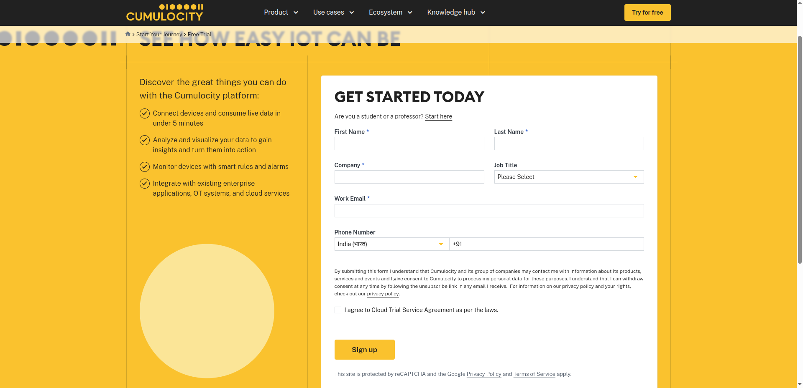
You will receive an email containing your tenant name and a one-time credential.
Click on Login in the email you received and enter the credentials provided.
{kind=link}
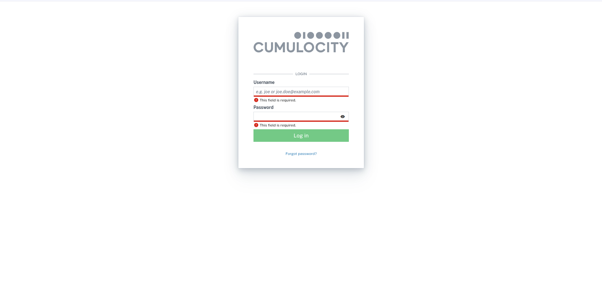
After logging in with your username and one-time password, you will be prompted to set a permanent password.
{kind=link}
After setting your permanent password, you will be asked to log in again with your username and the new password. You will then be redirected to the Cumulocity dashboard.
{kind=link}
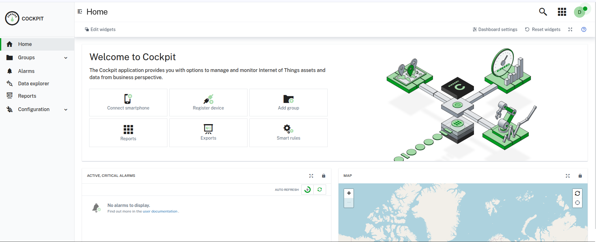
Note
Pre-requisite: You need to have the Cumulocity CLI installed on your local system (TAURI-L) to connect to the Cumulocity tenant. You can get the Cumulocity IoT URL and Cumulocity IoT User from the Cumulocity dashboard.
Device ID (Your preferred device ID name)
Cumulocity IoT URL (e.g., example.eu-latest.com)
Cumulocity IoT User (Your username for the Cumulocity tenant)
Open the TAURI-L terminal and execute the following commands to install the Cumulocity CLI.
Set the URL of your Cumulocity tenant.
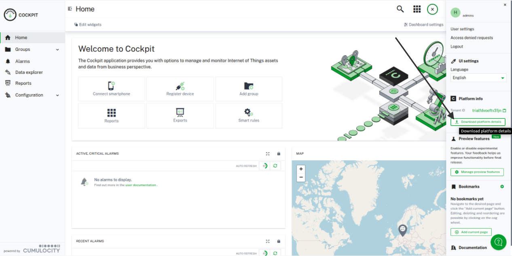
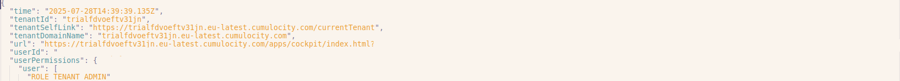
sudo tedge config set c8y.url <replace with your tenantDomainName>
Set the path to the root certificate if necessary. The default is /etc/ssl/certs.
sudo tedge config set c8y.root_cert_path /etc/ssl/certs/ca-certificates.crt
Create certificate and key files for the Cumulocity tenant.
sudo tedge cert remove sudo tedge cert create --device-id "your device ID"
Upload the certificate to Cumulocity.
sudo tedge cert upload c8y --user "your username" --password "your password"
Finally, run the following command to connect to Cumulocity.
Note
If you have tried to connect your device to the Thingsboard, before trying to connect with AWS, you have to follow the below commands, to unset Thingsboard.
sudo tedge config set mqtt.client.host localhost sudo tedge config set mqtt.port 8883 sudo tedge config unset mqtt.client.auth.cafile sudo tedge config unset mqtt.client.auth.certfile sudo tedge config unset mqtt.client.auth.keyfile
sudo tedge connect c8y
{kind=link}
{kind=link}
After registering your device with Cumulocity, navigate to the Cumulocity dashboard and click on Application switcher in the top right corner.
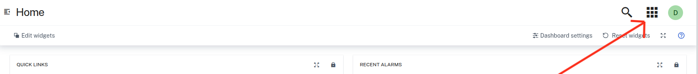
{kind=link}
Select Device Management from the dropdown menu to be redirected to the Device Management dashboard.
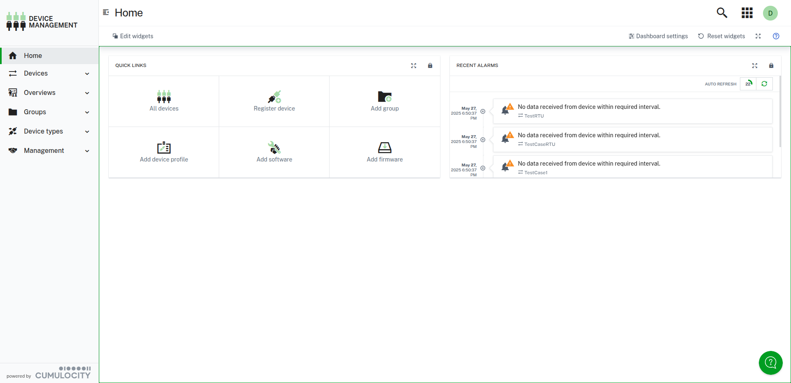
{kind=link}
In the Device Management dashboard, click on All devices to view your registered device.
{kind=link}
Refer to Device connection for instructions on making the physical connection of the Selec MFM383A Panel Energy Meter to the Tedge device (TAURI-L) using an RS485 to USB converter.
Execute the source code on the device to start sending meter data to Cumulocity.
Note
For Cumulocity cloud open the path of the project PHYTedge-Modbus-Plugin/modbus_plugin/app.py and change the port to ‘your_device_port’ and configuration DEVICE_CONFIG and change the ‘measurement_topic’ to: te/device/main///m/environment
For Energy meter selection please refer to Energy Meter Device Selection.
After running the source code, you will be able to see the Energy Meter data in the Cumulocity Device ID.
Click on the device ID to be redirected to your device ID dashboard.
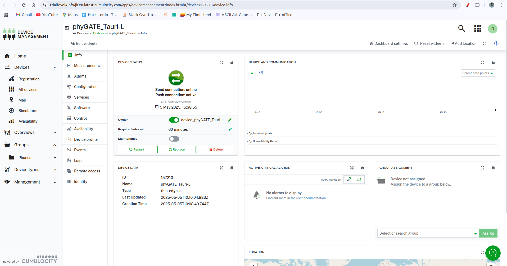
b. Click on **Measurements** in the left sidebar to view the energy meter data.Voltage
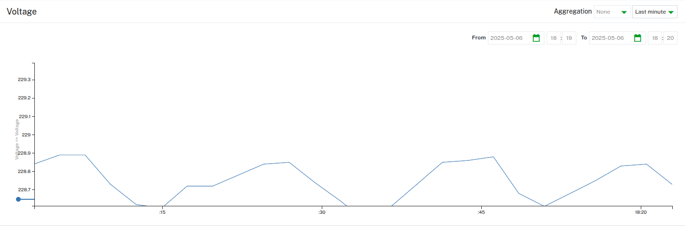
Current
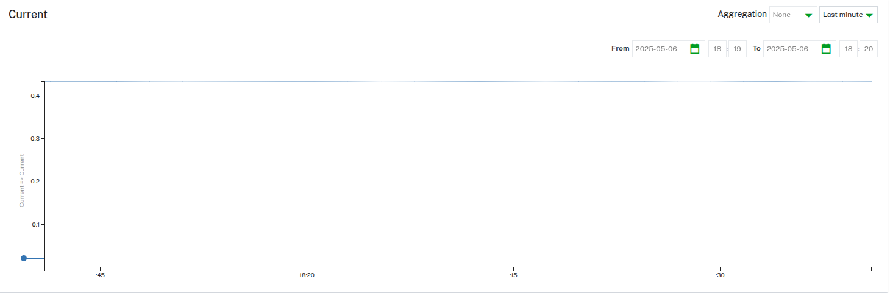
Energy
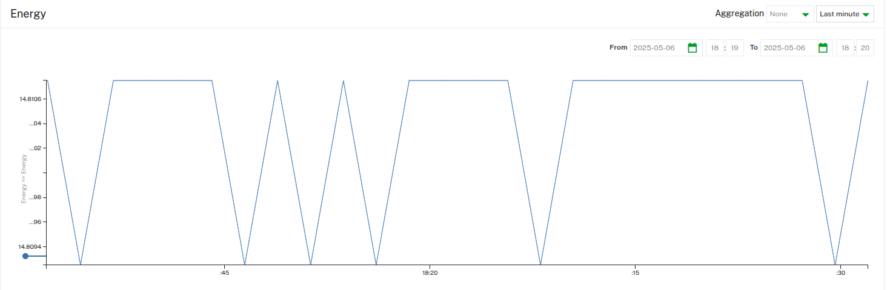
Frequency
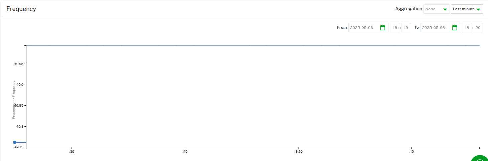
Power Factor
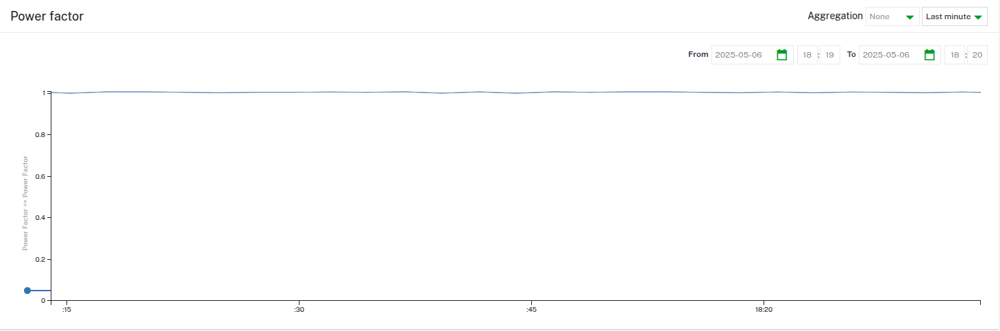
Apparent Power
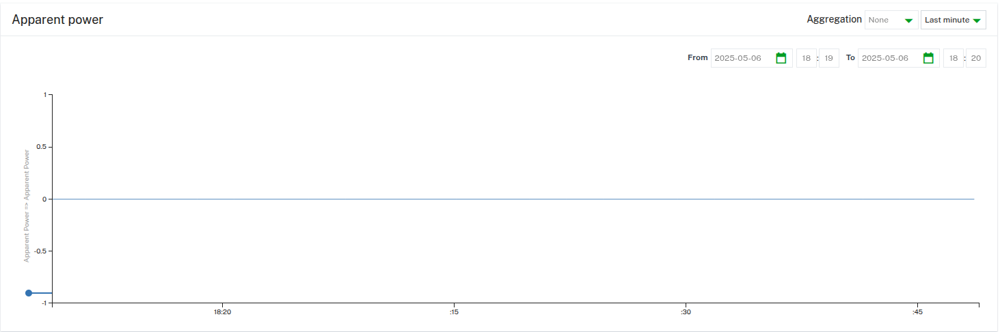
Active Power
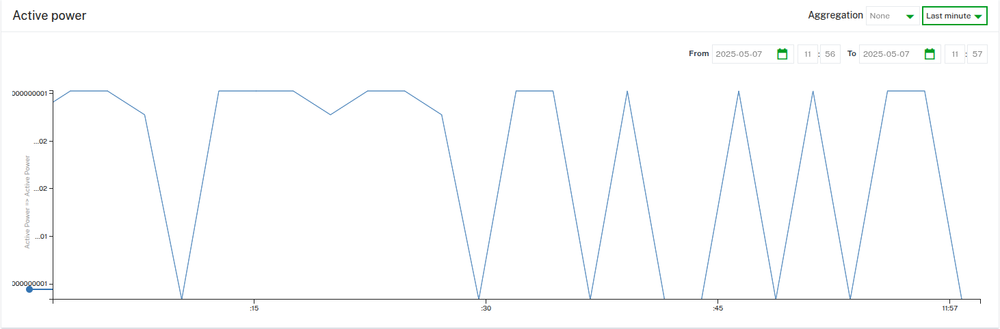
{kind=link}
{kind=link}
{kind=link}
{kind=link}
{kind=link}
{kind=link}
{kind=link}
{kind=link}
Connecting to AWS
Create an AWS account if you don’t have one already by visiting AWS Free Tier.
After creating your account, log in to the AWS Management Console.
Navigate to the search bar and type IoT Core.
{kind=link}
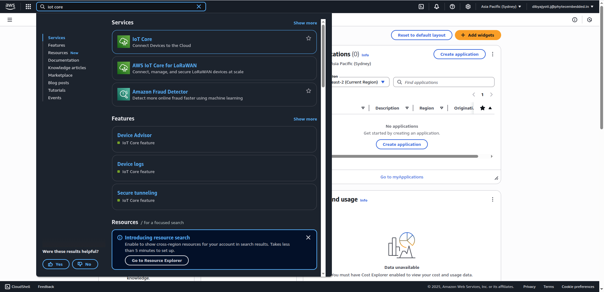
Get the aws IoT core URL to set in the Thin-edge configuration.
Click on View domain configuration
{kind=link}
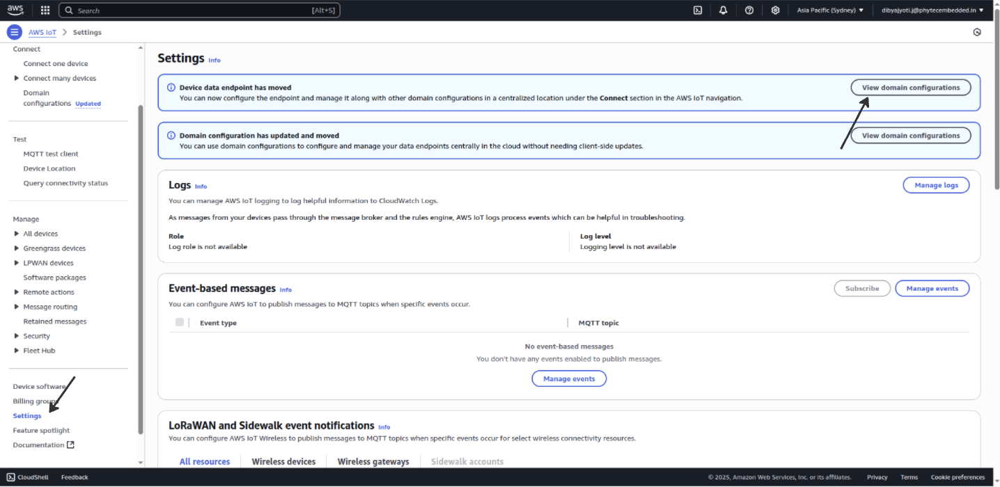
{kind=link}
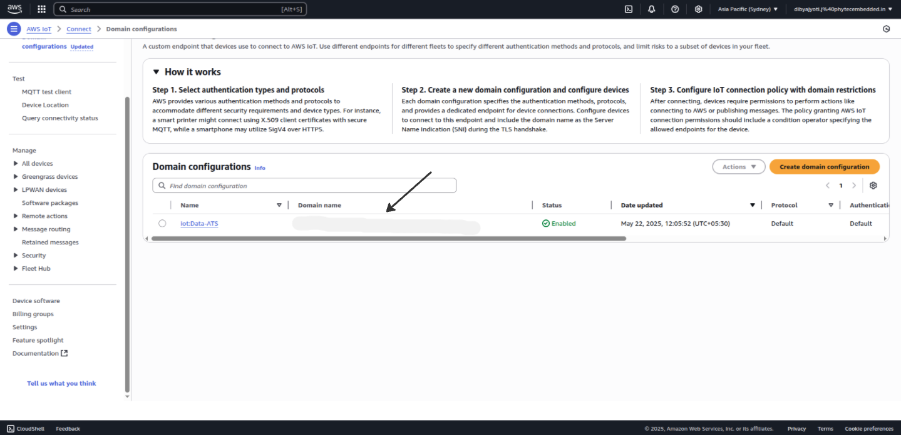
Open the TAURI-L terminal and execute the following commands to install the AWS CLI.
Note
The Device ID can be chosen by the user; however, it must remain consistent across all communications and operations to ensure proper identification and tracking.
Set the URL of your AWS IoT Core.
tedge config set aws.url "your-aws-iot Domain Name"
Create certificate and key files for AWS IoT Core.
sudo tedge cert remove sudo tedge cert create --device-id "your device ID"
Navigate to the Security section in the AWS IoT Core console sidebar and click on Policies and click on Create policy.
{kind=link}
Click on json and paste the below policy and then click on create.
{kind=link}
{
"Version": "2012-10-17",
"Statement": [
{
"Effect": "Allow",
"Action": "iot:Connect",
"Resource": "arn:aws:iot:ap-southeast-2:825010217716:client/${iot:Connection.Thing.ThingName}"
},
{
"Effect": "Allow",
"Action": "iot:Subscribe",
"Resource": [
"arn:aws:iot:ap-southeast-2:825010217716:topicfilter/thinedge/${iot:Connection.Thing.ThingName}/cmd/#",
"arn:aws:iot:ap-southeast-2:825010217716:topicfilter/$aws/things/${iot:Connection.Thing.ThingName}/shadow/#",
"arn:aws:iot:ap-southeast-2:825010217716:topicfilter/thinedge/devices/${iot:Connection.Thing.ThingName}/test-connection"
]
},
{
"Effect": "Allow",
"Action": "iot:Receive",
"Resource": [
"arn:aws:iot:ap-southeast-2:825010217716:topic/thinedge/${iot:Connection.Thing.ThingName}/cmd",
"arn:aws:iot:ap-southeast-2:825010217716:topic/thinedge/${iot:Connection.Thing.ThingName}/cmd/*",
"arn:aws:iot:ap-southeast-2:825010217716:topic/$aws/things/${iot:Connection.Thing.ThingName}/shadow",
"arn:aws:iot:ap-southeast-2:825010217716:topic/$aws/things/${iot:Connection.Thing.ThingName}/shadow/*",
"arn:aws:iot:ap-southeast-2:825010217716:topic/thinedge/devices/${iot:Connection.Thing.ThingName}/test-connection"
]
},
{
"Effect": "Allow",
"Action": "iot:Publish",
"Resource": [
"arn:aws:iot:ap-southeast-2:825010217716:topic/thinedge/${iot:Connection.Thing.ThingName}/td",
"arn:aws:iot:ap-southeast-2:825010217716:topic/thinedge/${iot:Connection.Thing.ThingName}/td/*",
"arn:aws:iot:ap-southeast-2:825010217716:topic/$aws/things/${iot:Connection.Thing.ThingName}/shadow",
"arn:aws:iot:ap-southeast-2:825010217716:topic/$aws/things/${iot:Connection.Thing.ThingName}/shadow/*",
"arn:aws:iot:ap-southeast-2:825010217716:topic/thinedge/devices/${iot:Connection.Thing.ThingName}/test-connection"
]
}
]
}
Register a Device (thing)
Navigate to the Manage section in the AWS IoT Core console sidebar.
Click on All devices and select Things.
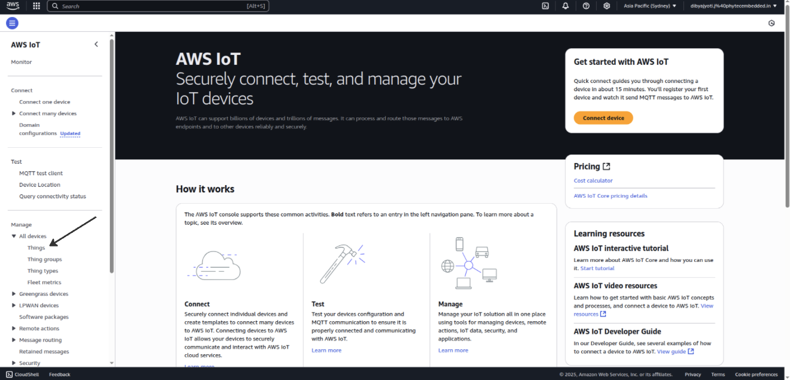
Click on Create things and then select Create single thing and then click Next.
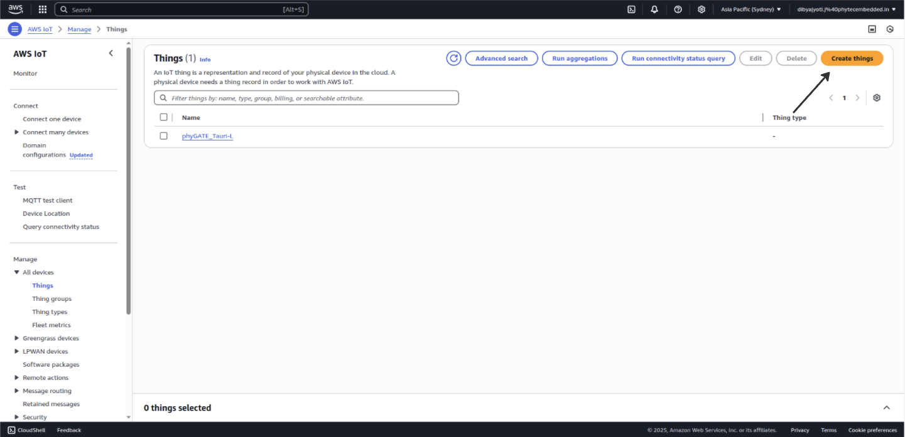
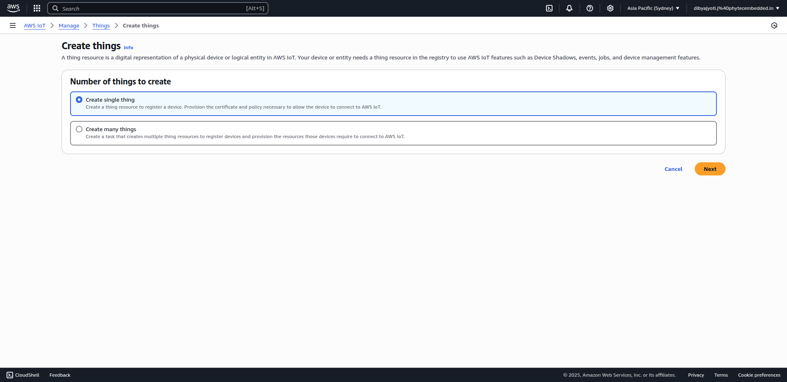
Enter the device name (your device ID), select Unnamed shadow (classic) and click on Next.
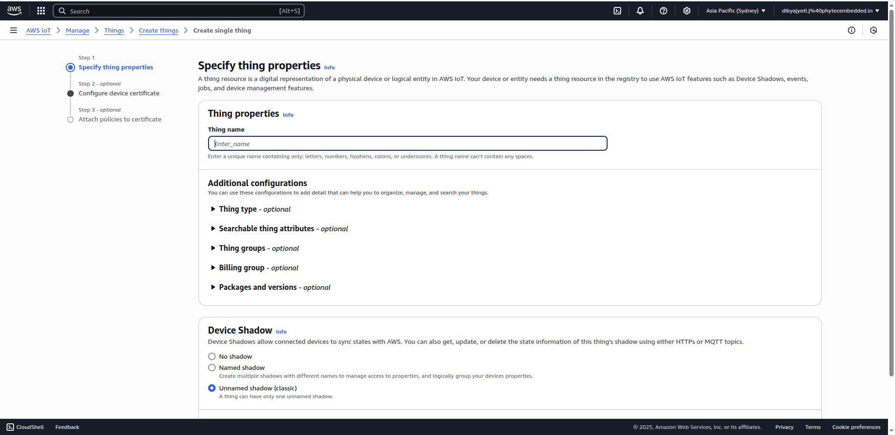
On the device certificate page, choose Use my certificate → CA is not registered with AWS IoT
Click on Choose file under Certificate and select your tedge-certificate.pem file, and then click on Open → Next.
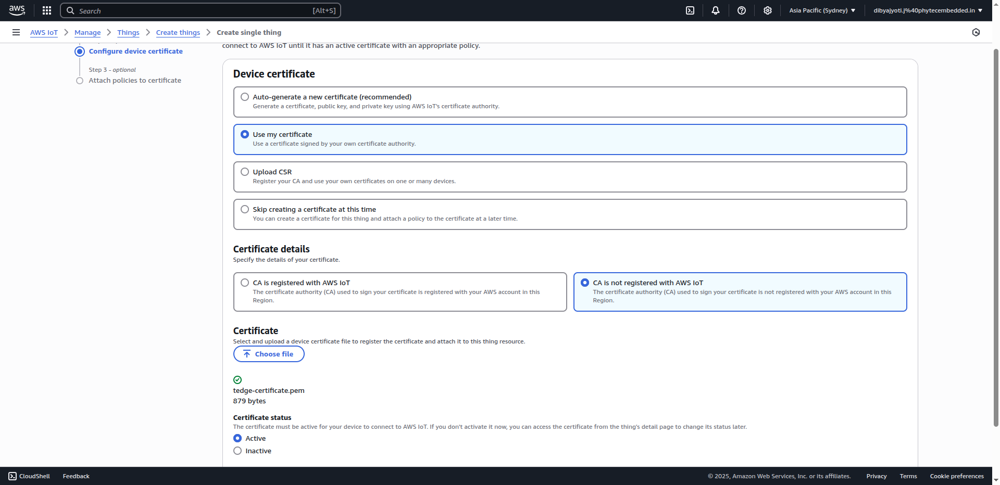
Select the policy you created earlier and click on Create thing.
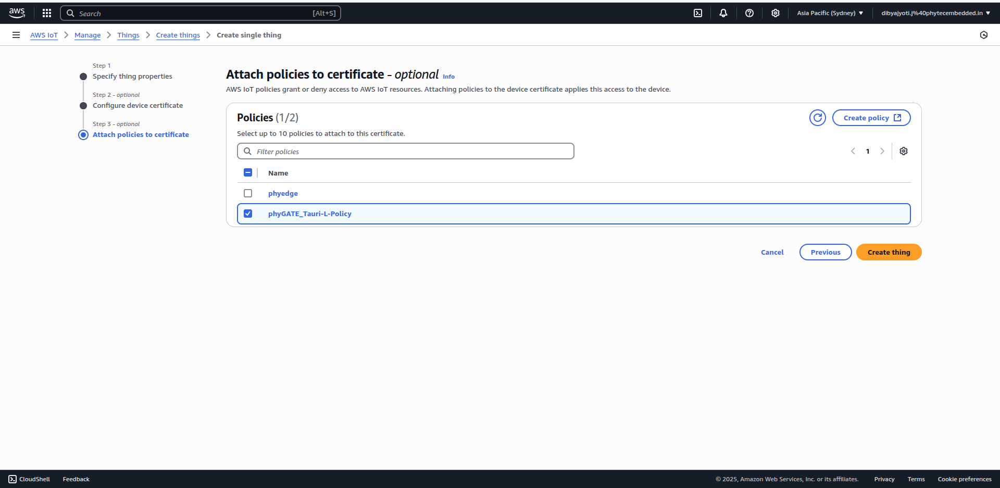
Head over to your TAURI-L terminal and connect your device to AWS IoT Core by running the following command:
Note
If you have tried to connect your device to the Thingsboard, before trying to connecting with AWS, you have to follow the below commands, to unset Thingsboard.
sudo tedge config set mqtt.client.host localhost sudo tedge config set mqtt.port 8883 sudo tedge config unset mqtt.client.auth.cafile sudo tedge config unset mqtt.client.auth.certfile sudo tedge config unset mqtt.client.auth.keyfile
sudo tedge connect aws
Go to the AWS IoT core and select your thing and click on Activity and then click on MQTT test client.
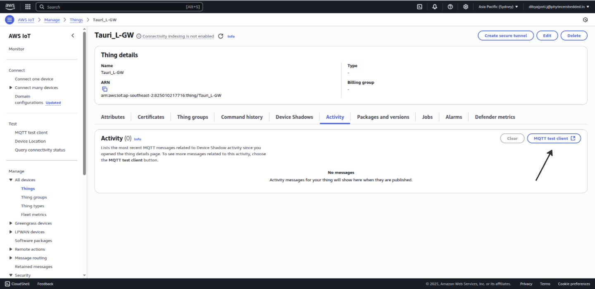
Click on Topic Filter and enter the topic thinedge/<your-device-id>/# and click on Subscribe to topic.
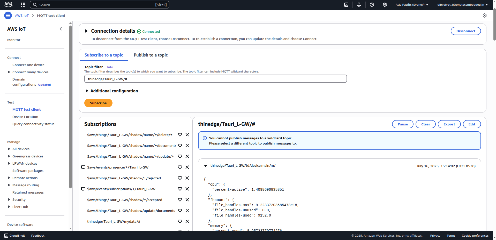
Execute the source code on the device to start sending meter data to AWS.
{kind=link}
{kind=link}
{kind=link}
{kind=link}
{kind=link}
{kind=link}
{kind=link}
{kind=link}
Note
For AWS cloud open the path of the project PHYTedge-Modbus-Plugin/modbus_plugin/app.py and change the port to ‘your_device_port’ and configuration DEVICE_CONFIG and change the ‘measurement_topic’ to: aws/td/<Use your prefered topic>
For Energy meter selection please refer to Energy Meter Device Selection.
And then execute the source code on the device.
{kind=link}
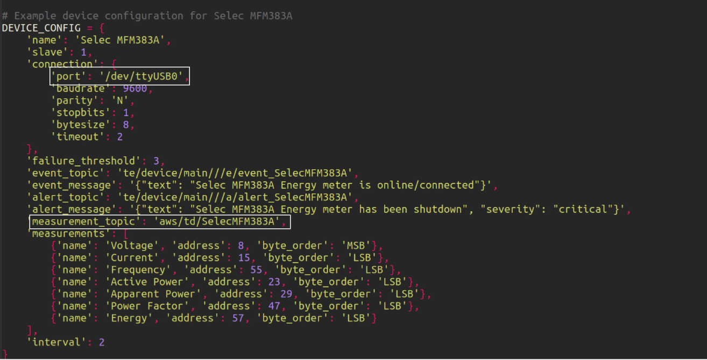
Head over to the AWS IoT Core MQTT test client and you should see the data being published to the topic aws/td/#.
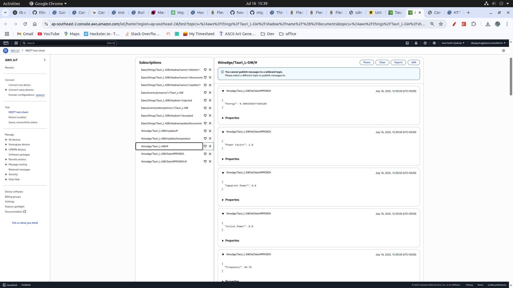
{kind=link}
Connecting to Thingsboard
Head over to the TAURI-L terminal and execute the following commands to install the Thingsboard CLI.
Copy the ca.pem and ca_key.pem of the server to the client device.
Note
ca certificates will only be provided by the PHYTEC India Thingsboard server admin.
Create a csr file for the client device
sudo tedge cert remove sudo tedge cert create-csr --device-id "Tauri-L_GW"
Sign the certificate with the csr file
sudo openssl x509 -req -in tedge.csr -CA ca.pem -CAkey ca_key.pem -CAcreateserial -out tedge-certificate.pem -days 365 -sha256
Set the Thingsboard URL.
sudo tedge config set mqtt.client.host 108.181.190.31 sudo tedge config set mqtt.port 8883 sudo tedge config set mqtt.client.auth.cafile <ca file path> sudo tedge config set mqtt.client.auth.certfile <cert file path> sudo tedge config set mqtt.client.auth.keyfile <key file path>
You can access thingsboard by visiting Thingsboard.
For username use: .. and for password use: .. and click on Sign In.
Note
The username and password are provided by the PHYTEC India Thingsboard server admin.
After signing in, you will be redirected to the Thingsboard dashboard.
{kind=link}
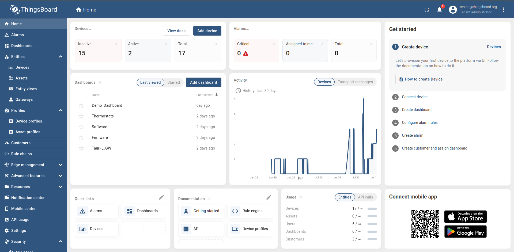
Click on Profiles in the left sidebar and then click on Device profiles.
Click on + and select Create new device profile.
{kind=link}
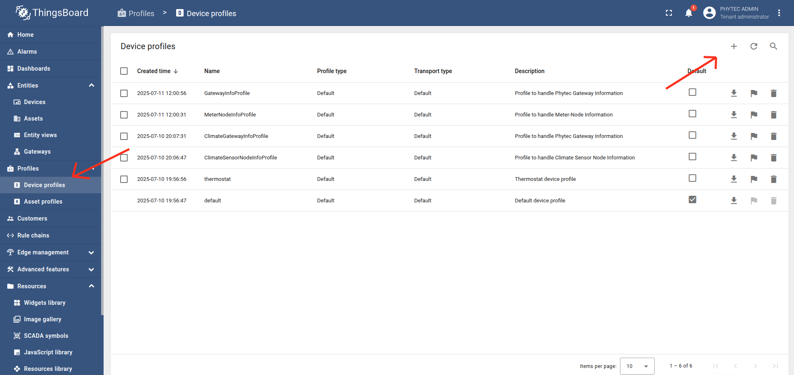
Fill the name as Tauri-L_GW, and in the default rule chain select Root Rule Chain. Then click on Transport configuration and select Transport type as MQTT.
{kind=link}
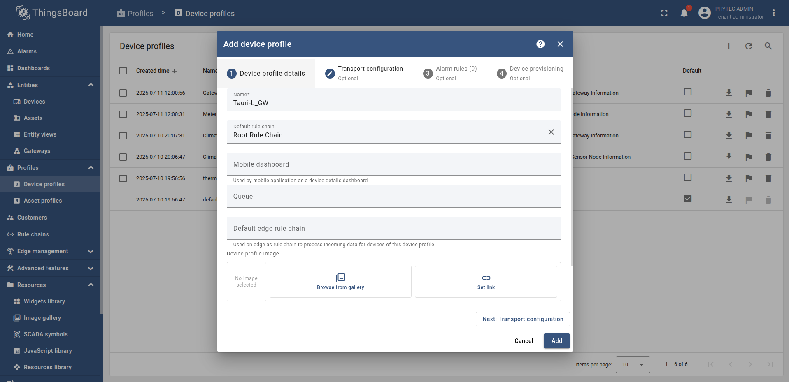
Note
For the MQTT device topic filter select the Telemetry topic filter and change it to: v1/devices/me/SEMtelemetry.
{kind=link}
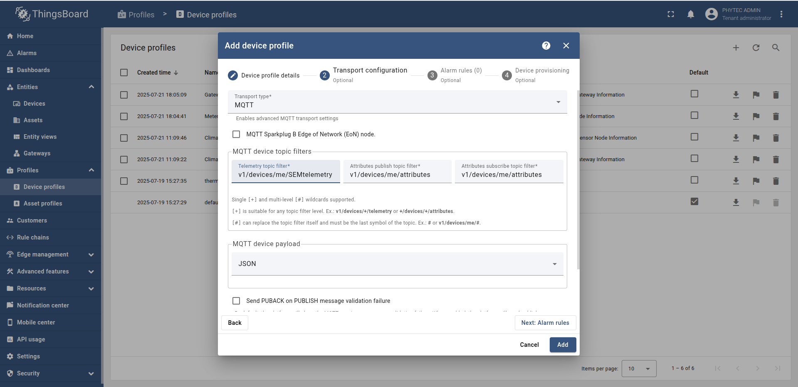
Click on Devices in the left sidebar and then click on + to add a new device.
{kind=link}
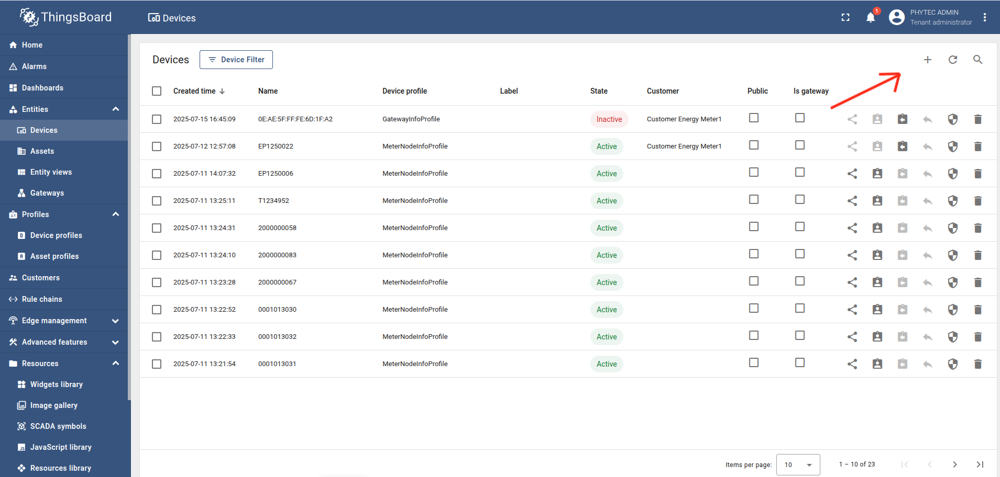
Fill the name as Tauri-L_GW and select the device profile created in step 6. Then click on Next: Credentials.
{kind=link}
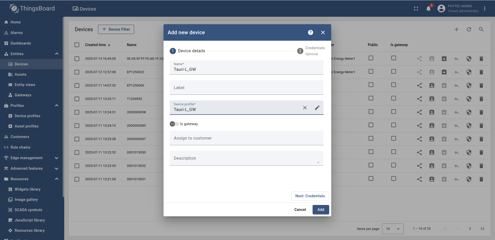
In the credentials section, select X.509 and paste your tedge-certificate.pem and click on Add.
Note
You can use cat command on your client device terminal and paste the certificate in the credentials section. Make sure you paste the certificate in the correct format.
Paste your certificate in the following format (row-wise, as shown):
-----BEGIN CERTIFICATE----- MIIBIjANBgkqhkiG9w0BAQEFAAOCAQ8AMIIBCgKCAQEAn... ... ... ... -----END CERTIFICATE-----
{kind=link}
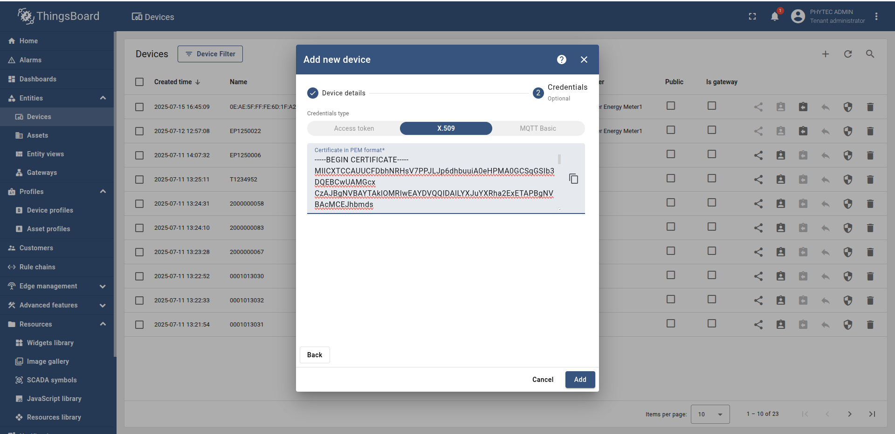
Now your device creation is ready to recieve data from the client device.
Head over to the Tauri-L terminal and execute the source code on the device to start sending meter data to Thingsboard.
Note
For Thingsboard cloud open the path of the project PHYTedge-Modbus-Plugin/modbus_plugin/app.py and change the port to ‘your_device_port’ and configuration DEVICE_CONFIG and change the ‘measurement_topic’ to: v1/devices/me/SEMtelemetry
For Energy meter selection please refer to Energy Meter Device Selection.
{kind=link}
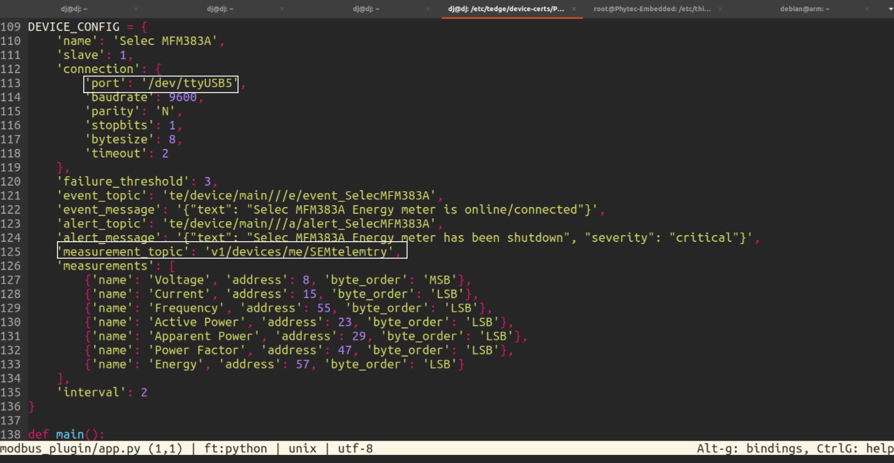
Now after execution of the source code, you will be able to see the Energy Meter data in the Thingsboard Device Latest Telemetry section.
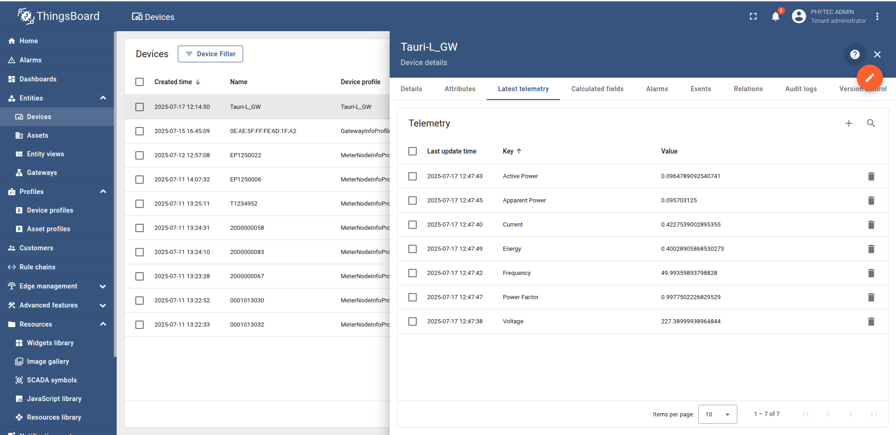
{kind=link}